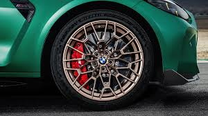
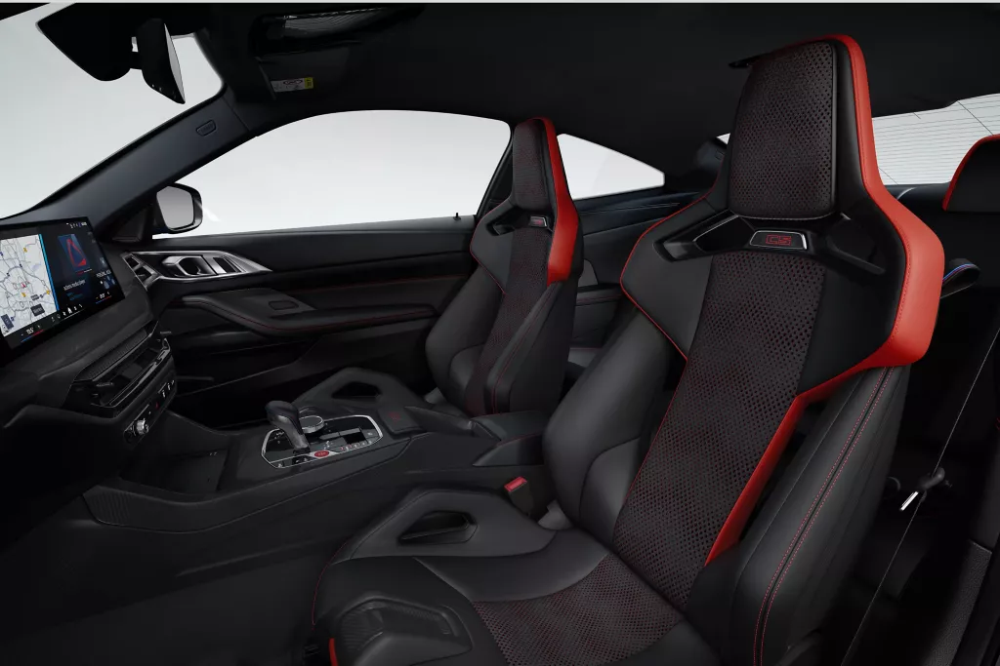

BMW M4 CS
ENGINE
|
Under the hood of the BMW M4 CS lies a high-performance 3.0-liter BMW M TwinPower Turbo inline 6-cylinder engine, delivering an exhilarating 543 horsepower. Engineered for peak precision and power, this lightweight, high-revving engine features a reinforced crankshaft, forged lightweight components, and optimized cooling systems—translating to razor-sharp throttle response and relentless acceleration. Paired with an 8-speed M Steptronic transmission and rear-wheel drive, the M4 CS rockets from 0 to 100 km/h in just 3.4 seconds, offering motorsport-level performance in a street-legal coupe. |
WHEEL & TIRES |
The BMW M4 CS comes equipped with exclusive forged M alloy wheels that perfectly balance lightweight construction and aggressive styling. Featuring a staggered setup—19-inch wheels at the front and 20-inch at the rear—these rims are not just for show; they’re designed to optimize handling and traction under extreme performance conditions. Wrapped in high-performance Michelin Pilot Sport Cup 2 tires, the M4 CS delivers razor-sharp cornering grip, enhanced road feedback, and superior stability at high speeds. Whether on the track or the open road, the wheels and tires on the M4 CS are engineered to maximize control and confidence. |
STEERING
|
The BMW M4 CS features a precision-tuned, M Servotronic steering system that delivers an exceptional balance between everyday comfort and track-ready responsiveness. Engineered for agility, the variable-ratio steering adapts to driving conditions, providing effortless maneuverability at low speeds and razor-sharp feedback during high-speed cornering. Enhanced by a lightweight front axle and M-specific suspension tuning, the steering offers unmatched accuracy and driver connection, allowing you to place the M4 CS exactly where you want it—whether carving through tight bends or dominating the straightaways. |
SEATS |
Inside the BMW M4 CS, driver and passenger are greeted by M Carbon bucket seats designed for both performance and luxury. These lightweight, race-inspired seats offer exceptional lateral support during aggressive cornering, while integrated headrests and harness cutouts underscore their motorsport pedigree. Wrapped in a combination of Merino leather and Alcantara, the seats provide a premium feel without compromising on functionality. With manual adjustments for reduced weight and a sculpted design that enhances the car’s dynamic feel, the M4 CS seating ensures you stay firmly in control—on the track or the road. |
BRAKES
|
The BMW M4 CS is equipped with high-performance M Compound brakes as standard, delivering exceptional stopping power and fade resistance even under extreme driving conditions. Designed with lightweight materials to reduce unsprung mass, these brakes provide precise modulation and confident braking performance on both road and track. For those seeking ultimate performance, optional M Carbon ceramic brakes are available, offering even greater thermal durability and weight savings. Whether you're pushing the limits on a circuit or navigating city streets, the M4 CS braking system ensures total control and confidence at every turn. |
DRIVING TECHNOLOGY
|
The BMW M4 CS is packed with advanced driving technology that enhances performance, precision, and driver engagement. At its core is the Adaptive M suspension with electronically controlled dampers, allowing the chassis to instantly adjust to changing road conditions and driving styles. The M4 CS also features an Active M Differential and integrated M Drive modes, enabling drivers to fine-tune throttle response, steering, damping, and stability control for a personalized driving experience. With a focus on track performance and everyday usability, the M4 CS seamlessly blends cutting-edge tech with motorsport DNA for unmatched control and confidence behind the wheel. |